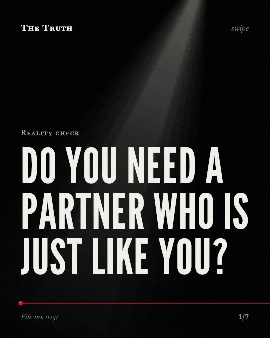

Reality check
Do you need a partner who is just like you?

Differences in personality predict marital satisfaction.
While you look for someone who mirrors you, the evidence shows that discrepancies in personality traits and love styles are linked to how satisfied spouses feel.
Supported. At least one solid peer-reviewed study. The evidence backs this.
What the research found
Heterogamy, or being with a partner of different status, is linked to marital satisfaction.
“The association between status and marital satisfaction revealed that heterogamy rather than homogamy is associated to such satisfaction.”
Study, 2019. Río, Acta de Investigación Psicológica.
The wife's level of education had a negative effect on her marital satisfaction.
“The wife's level of education had a negative effect on her marital satisfaction.”
Observational study, 2025. Jia et al., Frontiers in Psychology.
Discrepancies in personality traits and love styles predicted participants’ marital satisfaction.
“Personality traits and love styles discrepancy scores predicted participants’ marital satisfaction.”
Study, 2019. Odilavadze et al., Current Issues in Personality Psychology.
Having a different personality or love styles also has different associations with the marital satisfaction of spouses.
“Having a different personali-ty or love styles also has different associations with the marital satisfaction of spouses.”
Study, 2019. Odilavadze et al., Current Issues in Personality Psychology.
Spouses are matched by similarity in their health and education and by the perception of similarity in intelligence.
“Results suggest that spouses are matched by similarity in their health and education and by the perception of similarity in intelligence and the financial advantages of staying together.”
Study, 2019. Río, Acta de Investigación Psicológica.
The similarity myth.
People often choose partners with similar health, education, and perceived intelligence. However, heterogamy and differences in personality are linked to marital satisfaction.
Why your match might differ.
That may be why a partner who feels different from you in some ways might actually contribute to a more satisfied long-term relationship.
This part is our reading of the evidence, not a finding.
A quiet evening.
You sit on the couch. You process the day with a steady rhythm. Your partner reacts with a different energy. You are not the same, but you are still there.
The honest summary
The evidence suggests that similarity in status or personality is not the primary driver of marital satisfaction, and in some cases, differences are more relevant.
The studies are primarily observational and do not establish a direct cause-and-effect relationship between personality differences and relationship dissolution.
Are you seeking a mirror or a partner?
Sources
- Cristina Jenaro Río (2019). Marital Satisfaction in Spanish and Dominican Couples. Acta de Investigación Psicológica. Study, cited 4 times.
- Li Jia, Gerrit Antonides, Zhuomin Liu (2025). Spouses’ personalities and marital satisfaction in Chinese families. Frontiers in Psychology. Observational study, cited 12 times.
- Mariam Odilavadze, Mariam Panjikidze, Khatuna Martskvishvili et al. (2019). The role of personality and love style in marital satisfaction: Does similarity matter?. Current Issues in Personality Psychology. Study, cited 5 times.
Also read for this file, not quoted
- Kern et al. (2013). Lifelong Pathways to Longevity: Personality, Relationships, Flourishing, and Health.
- Eley et al. (2013). The relationship between resilience and personality traits in doctors: implications for enhancing well being.
- Alijani et al. (2023). Structural model of premenstrual syndrome based on marital satisfaction and personality traits with the mediating role of early maladaptive schemas.
This file was researched and drafted by software, then checked by rules a model cannot talk its way around: each quote above was matched word for word against the paper, and every number had to appear in it. How files are made.